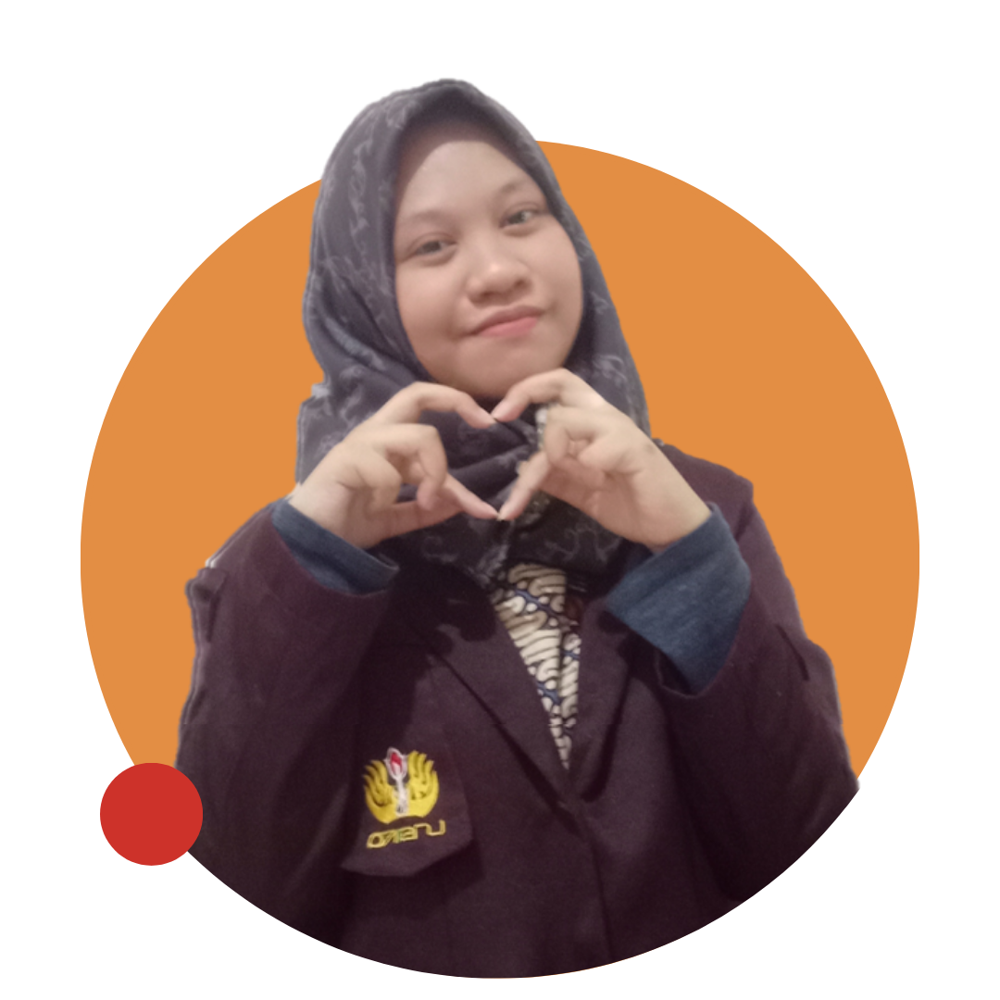

About Me
Mahasiswa tingkat akhir yang antusias di bidang software dan AI-Data Driven. Pernah menjadi Bangkit Cohort untuk learning path Mobile Development pada tahun 2023 dengan projek akhir aplikasi mobile pemesanan makanan sisa (user only side) dengan pemrograman Kotlin. Menjabat sebagai anggota dari divisi Data Science untuk Asisten Laboratorium sejak 2024. Berpengalaman mengajar di mata kuliah Algoritma dan Pemrograman Dasar, Struktur Data, Basis Data, Machine Learning, dan Pemrograman Berbasis Mobile (Framework Flutter).
